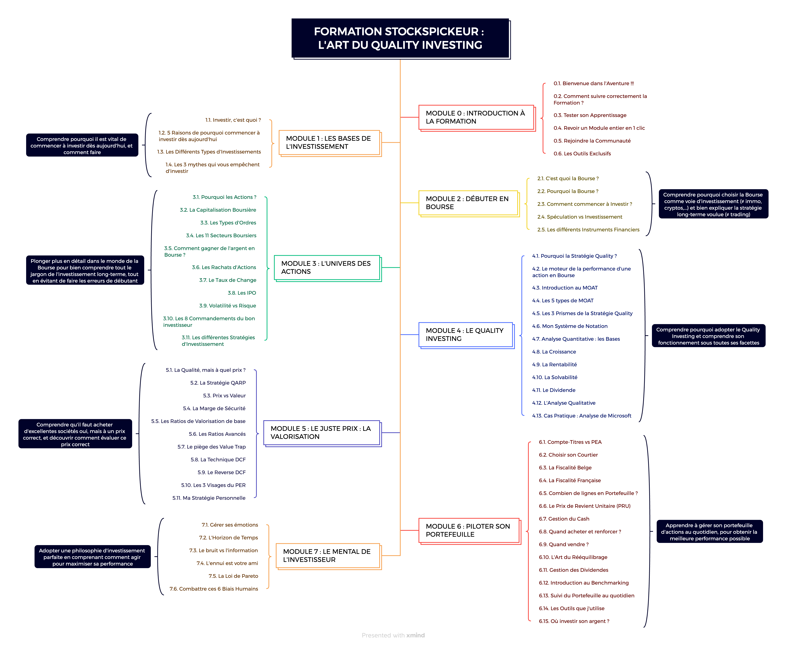
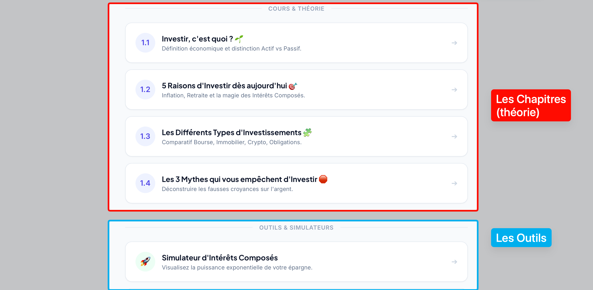
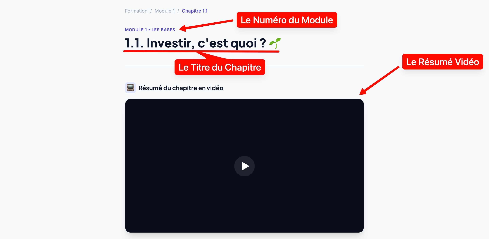
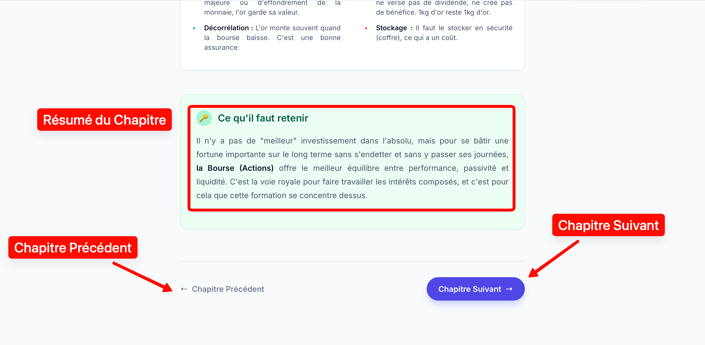

Pour tirer le maximum de valeur de StocksPickeur, il est absolument crucial de comprendre comment la plateforme a été pensée, structurée et organisée pour votre apprentissage. La Bourse n'est pas une discipline où l'on peut se permettre de picorer des informations au hasard, de survoler un concept complexe ou de sauter directement à la conclusion sans avoir lu l'introduction. L'investissement en Bourse est une science qui demande de la structure, de la méthode, et une grande rigueur intellectuelle.
1. La hiérarchie de la formation : Distinguer Modules et Chapitres
Avant d'aller plus loin, il est essentiel de bien clarifier le vocabulaire que nous allons utiliser tout au long de votre parcours. La formation globale est structurée selon une hiérarchie très précise, semblable à celle d'un cursus universitaire :
- La Formation : C'est l'ensemble de l'œuvre. Elle représente le programme complet de A à Z.
- Les Modules : Ce sont les grands "piliers" ou les grandes thématiques de la formation. Vous trouverez par exemple le Module 1 sur les "Fondamentaux", le Module 4 sur la "Stratégie Quality", ou le Module 5 sur "L'Analyse et la Valorisation". Pensez à un module comme à un livre entier traitant d'un sujet spécifique. Notre formation compte 7 modules principaux (plus ce module d'introduction).
- Les Chapitres : Ce sont les leçons individuelles contenues à l'intérieur d'un module. Par exemple, le "Module 1" contient le "Chapitre 1.1 : Investir c'est quoi ?", le "Chapitre 1.2 : Les raisons d'investir", etc. Ce sont les briques unitaires de votre apprentissage.

Concrètement, lorsque vous cliquez sur un Module depuis le menu principal de la formation, vous n'arrivez pas directement sur un cours. Vous arrivez sur la page de programme de ce module spécifique. Vous y trouverez la liste complète des différents Chapitres (qui contiennent les cours théoriques), mais aussi, pour certains modules, des Outils & Simulateurs que nous avons spécialement codés pour vous aider à pratiquer.

La règle d'or absolue de StocksPickeur : Suivez les modules et les chapitres dans l'ordre chronologique exact dans lequel ils vous sont présentés. Il peut être extrêmement tentant, par excès de confiance ou par impatience, de sauter directement au Module 5 pour apprendre à calculer le "Juste Prix" d'une action, ou au Module 6 pour savoir quand vendre et encaisser ses plus-values. C'est une erreur fondamentale que font la quasi-totalité des débutants qui échouent en Bourse.
L'investissement est un processus profondément cumulatif. Pensez-y comme à la construction d'une maison : si vos fondations (qui correspondent au Mindset et à la Stratégie enseignés dans les premiers modules) ne sont pas parfaitement solides et ancrées, vos murs et votre toit (les calculs mathématiques de Valorisation des modules suivants) finiront inévitablement par s'effondrer au premier krach boursier. Jouez le jeu, faites confiance au processus, et avancez pas à pas.
2. Vidéo ou Texte : C'est vous qui décidez de votre méthode
L'une des grandes forces de cette plateforme est de s'adapter à votre propre fonctionnement cérébral. Nous avons tous des manières différentes d'apprendre et d'assimiler l'information. Certains sont visuels, d'autres auditifs, d'autres ont besoin de lire à leur rythme. C'est pourquoi, dès le Module 1, chaque chapitre sera disponible en deux formats distincts simultanément sur la même page.

- Le Format Vidéo : C'est la solution idéale si vous êtes plutôt visuel et auditif, ou si vous souhaitez consommer la formation dans les transports. Les vidéos sont conçues pour être concises, dynamiques, elles vont droit au but, et utilisent de nombreux supports visuels pour vulgariser et imager les concepts financiers complexes.
- Le Format Texte (Article) : C'est le format parfait si vous lisez vite, si vous souhaitez prendre le temps d'analyser un graphique, de surligner des éléments importants mentalement, de prendre des notes détaillées dans votre propre carnet de bord, ou simplement si vous voulez revoir un point précis quelques semaines plus tard sans avoir à chercher fastidieusement à quelle minute d'une vidéo j'aborde ce sujet.
Note importante et rassurante : Le contenu pédagogique et la valeur délivrée sont rigoureusement identiques entre la vidéo et le texte. Si vous préférez lire l'article de A à Z, vous ne raterez aucun secret d'investissement caché dans la vidéo, et inversement. Bien sûr, pour une mémorisation maximale et une compréhension en profondeur, vous pouvez tout à fait regarder la vidéo une première fois pour saisir les grandes lignes, puis relire le texte à tête reposée pour en extraire les détails. Le choix vous appartient.
3. Le rythme d'apprentissage idéal : Le marathon, pas le sprint
À l'ère d'internet, la tentation de tout consommer immédiatement est immense. Beaucoup d'élèves achètent une formation en ligne le vendredi soir, la "binge-watchent" (la visionnent d'une traite) en un seul week-end comme ils le feraient avec la dernière série Netflix à la mode, et se réveillent le lundi matin en ayant tout oublié. C'est le meilleur moyen d'échouer.
La Bourse, l'économie, et l'analyse d'entreprises ne s'apprennent pas en gavant son cerveau d'informations d'un seul coup. C'est contre-productif. Privilégiez grandement 30 minutes de concentration totale et ininterrompue (ce qu'on appelle le "Deep Work") par jour plutôt que 5 heures d'affilée le dimanche après-midi. Quand vous ouvrez StocksPickeur, coupez vos notifications de téléphone, fermez vos autres onglets de navigation, prenez un café ou un thé, et plongez-vous intensément dans un ou deux chapitres maximum. Votre cerveau a un besoin physiologique de temps, de sommeil et de repos pour digérer l'information financière et faire des liens logiques entre les concepts.
4. La règle de l'itération : Le droit de ne pas tout comprendre du premier coup
Rappelez-vous un point essentiel : en rejoignant StocksPickeur, vous avez acquis un accès à cette formation à vie. Elle ne va pas disparaître la semaine prochaine.
Par conséquent, si un concept vous semble complexe (et croyez-moi, lorsque nous aborderons le calcul du Price-to-Earnings Ratio ou l'actualisation du flux de trésorerie disponible dans le Module 5, votre cerveau va chauffer), si une notion vous semble floue à la première lecture, c'est tout à fait normal et prévisible !
L'investissement s'apparente véritablement à l'apprentissage d'une nouvelle langue étrangère. Au début, les mots n'ont aucun sens, puis petit à petit, la grammaire s'installe. Ne bloquez jamais indéfiniment sur un concept qui vous résiste. Laissez reposer l'information, avancez un peu dans les chapitres suivants pour voir comment le concept s'intègre globalement, et revenez-y 3 jours plus tard avec un regard neuf et un cerveau reposé. C'est le principe de l'itération et de la répétition espacée qui transformera progressivement ces concepts abstraits en de véritables réflexes naturels d'analyse.
5. Validez vos acquis et avancez sereinement
Tout au long de votre lecture assidue des chapitres, vous tomberez régulièrement sur des encadrés de couleurs mettant en valeur des points cruciaux, des formules ou des citations inspirantes. Notamment, à la fin de chaque page de cours, vous retrouverez systématiquement l'encart vert clair intitulé "Ce qu'il faut retenir". Il ne s'agit pas d'une simple décoration : c'est la synthèse absolue, distillée et purifiée du chapitre. Si vous deviez ne noter qu'une seule chose, qu'une seule phrase dans votre carnet de notes d'investisseur avant de clore votre session du jour, c'est ce paragraphe-là.

Une fois le concept du chapitre parfaitement assimilé et vos notes prises, il vous suffira de cliquer sur le bouton sombre "Chapitre Suivant" situé tout en bas de la page pour continuer votre progression naturelle dans le programme, sans avoir besoin de repasser systématiquement par le menu principal des modules.
🔑 Ce qu'il faut retenir
Respectez scrupuleusement l'ordre des modules pour bâtir des bases solides avant la pratique. Privilégiez la régularité avec de courtes sessions quotidiennes plutôt que le gavage intensif, et acceptez de relire les concepts difficiles plus tard (itération). Enfin, choisissez votre format préféré (vidéo ou texte) et lisez toujours cette synthèse avant de passer au chapitre suivant.